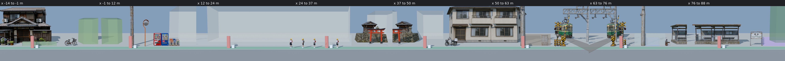
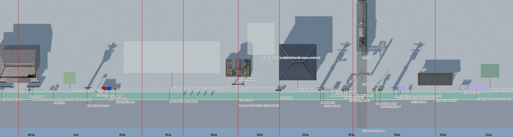

KM1-1 Hase Lanes
The first leg of route 1, from the home's front door to Hase Station's platform, laid out from your KM1-1 picture with the Kamakura models you approved. This is the layout before any level code is written: approve it, or tell me what to move, and the level is built from it (its scenes, play and hazards in the game's level builder).
About 105 m of lane, a 90-second leg at the kid's pace. The picture's ensemble is about 30 m wide, so its set pieces are spread along the lane in the picture's order, with the play between them.
The picture it comes from

Through the game camera
Each model at its real size and place, seen as the player will see it: the camera 12 m back, the lane (the green walking strip) at the front. See-through boxes are what is still to come. The shading is Blender's, not the game's toon look: judge the places, sizes, order and gaps.

From above

The play
| x (m) | What happens |
|---|---|
| -12 | start: out of the home's door (the home stem) |
| 15 | the ginger cat on the block wall (WallCat): it swipes at a ball kicked high |
| 24 | first-graders walking to school in a line, slower than the kid: get past without the ball touching one (Pedestrian bump) |
| 36 | the little shrine up its steps: coins on the steps' line |
| 45 | the parked scooter: dribble round it (an obstacle), its rider walking a parcel to the door |
| 61 | the level crossing: the bells ring, the barriers come down, the tram passes; wait, then cross (Crossing, with the tram as its traffic) |
| 79 | Hase Station's platform: the stop (the leg ends; KM1-2 rides the tram) |
Where everything stands
| x (m) | Model | Why there |
|---|---|---|
| -15.6 | KmAirConditioner | KM-A22, the home's outdoor unit on its stand |
| -12.0 | KmHome | the home and its fence: the level starts at its door |
| -9.6 | KmLetterbox | KM-A24 by the gate |
| -4.4 | KmBicycle | the bicycle against the fence |
| 3.0 | KmPoleTransformer | the pole with its transformer |
| 5.0 | KmMirror | the convex mirror at the kerb |
| 6.7 | KmVendingRed | the red machine |
| 7.8 | KmVendingBlue | the blue machine (KM-A19) beside the red |
| 9.2 | KmRecyclingBins | the recycling bins (KM-A20): a crow on them |
| 36.0 | KmToriiSmall | the little shrine's torii, up its steps |
| 36.0 | KmShrineSmall | the little shrine behind it |
| 45.0 | KmScooter | the delivery scooter, parked at a door while its rider delivers |
| 49.0 | KmHouseBeige | the beige stucco house (KM-B04) |
| 54.0 | KmPolePlain | a plain pole with a street lamp (KM-A26) |
| 54.6 | KmStreetLamp | the street lamp on it |
| 57.2 | KmControlCabinet | the crossing's control cabinet (KM-A25) |
| 59.0 | KmCrossingSignal | the crossing's bells and lamps, this side |
| 60.1 | KmCrossingBarrier | its barrier |
| 63.0 | KmTram | the tram coming down the tracks to the crossing (toward the camera, as Crossing's traffic) |
| 63.0 | KmWireGantry | the overhead wire gantry over the tracks |
| 65.9 | KmCrossingBarrier | the far barrier |
| 67.0 | KmCrossingSignal | the far bells and lamps |
| 70.0 | KmPolePlain | a pole by the station |
| 73.6 | KmTicketGate | Hase's ticket gate (KM-A28) |
| 79.0 | KmStationPlatform | Hase Station's platform: the stop |
| 85.0 | KmStationSign | the station's name board (KM-A29) |
| -9.0 | (to come) | potted plants and morning glories (their flowers in: KM-F04) |
| -0.8 | (to come) | persimmon (its leaves in: KM-F02) |
| 21.0 | (to come) | block wall (a KM-T plate) |
| 21.5 | (to come) | houses behind the wall (lane houses to come: new KM-B sheets, or the two houses repainted) |
| 36.0 | (to come) | steps up to the shrine (in its model) |
| 41.0 | (to come) | houses behind the shrine's lane (to come, as above) |
| 56.0 | (to come) | wooden fence and gate (a KM-T plate) |
| 63.0 | (to come) | rails across the lane |
| 71.0 | (to come) | chain-link fence along the tracks |
| 71.4 | (to come) | hydrangeas, blue (their flowers in: KM-F04) |
| 88.0 | (to come) | hydrangeas, pink and violet (KM-G19, G20) |
| 91.0 | (to come) | black pines (plants kit) |
Decided for now
- The delivery scooter is parked at the beige house's door while its rider delivers: an obstacle to dribble round. A scooter riding past would need its wheels modelled apart from the fork and exhaust its pictures draw over them.
- The first-graders walk in a line ahead of the kid, slower, on the walking strip: get past without the ball touching one.
- The tram crosses the lane toward the camera at the level crossing, as the game's crossings run their traffic: the bells ring, the barriers come down, wait for it to pass.
- The block wall with the cat comes after the vending corner (in the picture it is left of the home, before the level's start).
- The tram's tracks cross the street's depth, so in the level they get their own list that the house rows and the verge keep out of (LEARNINGS E11), and nothing taller than 0.4 m stands between the camera and the lane (E10).
- The foliage (KM-F02, KM-F04) and the lane texture (KM-T07) are already in (since 15 November): the persimmon's leaves, the hydrangeas, azaleas and morning glories, and the lane with its walking strip. The board's boxes for them are only waiting for the trees and the lane to be built.
For you
- The lane's houses: five new pictures of KM1-1's lane, from the home's door to the station, are on the city prompts page (KM1-1a to KM1-1e); the houses and frontage between the set pieces are built from them.
- Anything to move: a model's place, the order, the length, or the play beats.